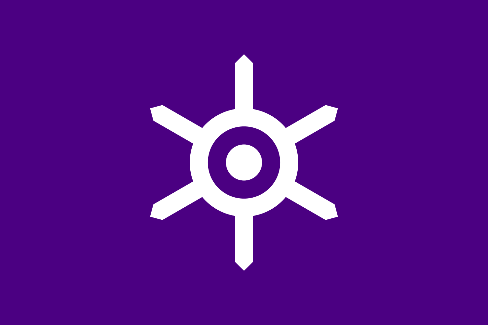
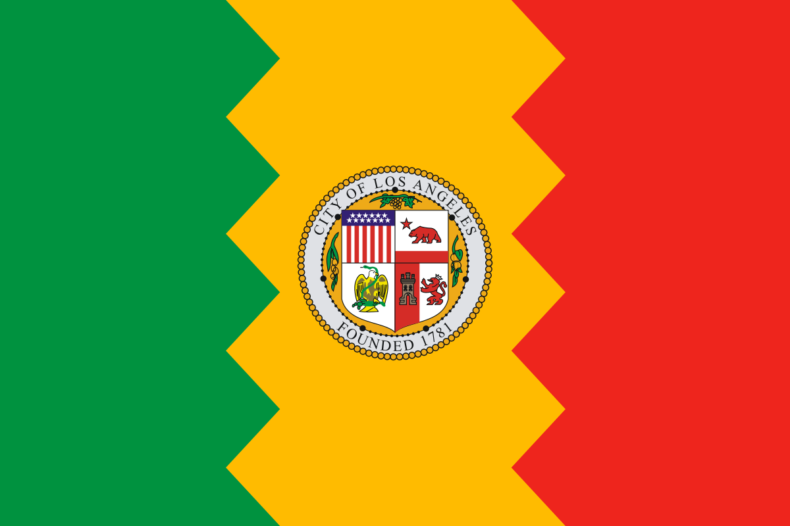

World Travel

Tokyo, officially Tokyo Metropolis, one of the 47 prefectures of Japan, has served as the Japanese capital since 1869. As of 2014 the Greater Tokyo Area ranked as the most populous metropolitan area in the world. The urban area houses the seat of the Emperor of Japan, of the Japanese government and of the National Diet. Tokyo forms part of the Kanto region on the southeastern side of Japan's main island, Honshu, and includes the Izu Islands and Ogasawara Islands. Tokyo was formerly named Edo when Shōgun Tokugawa Ieyasu made the city as his headquarters in 1603. It became the capital after Emperor Meiji moved his seat to the city from Kyoto in 1868; at that time Edo was renamed Tokyo. Tokyo Metropolis formed in 1943 from the merger of the former Tokyo Prefecture and the city of Tokyo.
Rome, Italys capital, is a sprawling, cosmopolitan city with nearly 3,000 years of globally influential art, architecture and culture on display. Ancient ruins such as the Forum and the Colosseum evoke the power of the former Roman Empire. Vatican City, headquarters of the Roman Catholic Church, has St. Peter’s Basilica and the Vatican Museums, which house masterpieces such as Michelangelo’s Sistine Chapel frescoes.
Los Angeles, United States of America

Los Angeles is a sprawling Southern California city and the center of the nations film and television industry. Near its iconic Hollywood sign, studios such as Paramount Pictures, Universal and Warner Brothers offer behind-the-scenes tours. On Hollywood Boulevard, TCL Chinese Theatre displays celebrities hand- and footprints, the Walk of Fame honors thousands of luminaries and vendors sell maps to stars homes.
Dubai, United Arab Emerites
Dubai is a city and emirate in the United Arab Emirates known for luxury shopping, ultramodern architecture and a lively nightlife scene. Burj Khalifa, an 830m-tall tower, dominates the skyscraper-filled skyline. At its foot lies Dubai Fountain, with jets and lights choreographed to music. On artificial islands just offshore is Atlantis, The Palm, a resort with water and marine-animal parks.
Port Moresby, Papua New Guinea
Port Moresby is the sprawling capital of Papua New Guinea, a country north of Australia. The vast anthropological collection at the PNG National Museum and Art Gallery includes masks and carved wooden poles. Nearby, Parliament House is modeled on a traditional house of worship. Its entrance is dominated by a large, colorful mosaic featuring national motifs. There are views over Port Moresby Harbour from Paga Hill.

Santorini is one of the Cyclades islands in the Aegean Sea. It was devastated by a volcanic eruption in the 16th century BC, forever shaping its rugged landscape. The whitewashed, cubiform houses of its 2 principal towns, Fira and Oia, cling to cliffs above an underwater caldera (crater). They overlook the sea, small islands to the west and beaches made up of black, red and white lava pebbles.